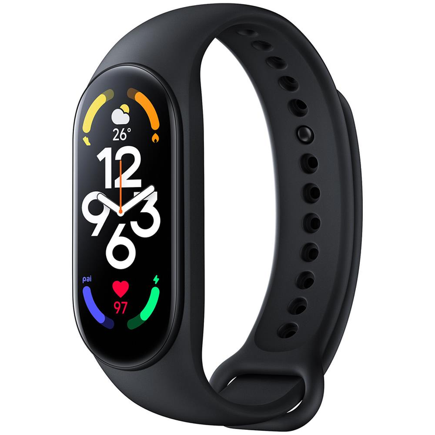

<!DOCTYPE html>
<html lang="en">
  <head>
    <meta charset="UTF-8" />
    <meta name="viewport" content="width=device-width, initial-scale=1.0" />
    <title>Document</title>
    <style>
      img {
        width: 100px;
        margin-left: 20px;
      }
    </style>
  </head>
  <body>
    <p id="demo"></p>
    <script>
      const prekes = [ // <- Štai čia turime masyva
        {
          Pavadinimas: '"Imilab"', // <- o tame masyve yra objektai su kintamaisiais
          Kaina: 60,
          foto: '',
        },
        {
          Pavadinimas: '"Huawei"',
          Kaina: 600,
          foto: '',
        },
        {
          Pavadinimas: '"Garmin"',
          Kaina: 400,
          foto: '',
        },
        {
          Pavadinimas: '"Xiaomi"',
          Kaina: 40,
          foto: '',
        },
        {
          Pavadinimas: '"Fitbit"',
          Kaina: 150,
          foto: '',
        },
      ];
      let text = ""; // <- sudarome kintamaji text
      for (i = 0; i < prekes.length; i++) {// <- kad išmestu visus objekto elementus (greičiau) kurie yra masyve, sudarome cikla(for)
        text += "Prekės informacija:" + "<br>"; // kuris paiims kiekviena objekto elementa praeidamas ši ciklą
        if (prekes[i].Pavadinimas == false) { // <- Sudarome if salygini sakyni kad patikrinti ar informacija pateikta gerai
          prekes[i].Pavadinimas = "nėra pavadinimo"; // <- Jei nepateikta iššoks tekstas su žodžiu "nėra"
        }
        text += "Pavadinimas - " + prekes[i].Pavadinimas + "<br>"; // <- Pirmasis masyvo objekto kintamasis - "Pavadinimas", kuris pateiks kiekvienos prekes pavadinima
        if (prekes[i].Kaina == false) {// tikrinam
          text += prekes[i].Kaina = "nėra kainos" + "<br>";
        } else {// <- čia else yra šiuo atveju kad nerodytu € po "nėra kainos" jei sąlyga netikra
          text += "Kaina - " + prekes[i].Kaina + " €" + "<br>"; // <-Antrasis masyvo objekto kintamasis - "Kaina"
        }
        if (prekes[i].foto == false) {// vel tikrinam
          prekes[i].foto = "nėra foto";
        }
        text += prekes[i].foto + "<br>"; // <-Trečiasis masyvo objekto kintamasis - "foto"(nuotrauka)
      } // <- ciklas užsibaigs kai pasieks masyvo galutini objekta, del prekes.length (i < prekes.lenght)
      document.getElementById("demo").innerHTML = text; // ir išvedame visa saraša.
    </script>
  </body>
</html>
